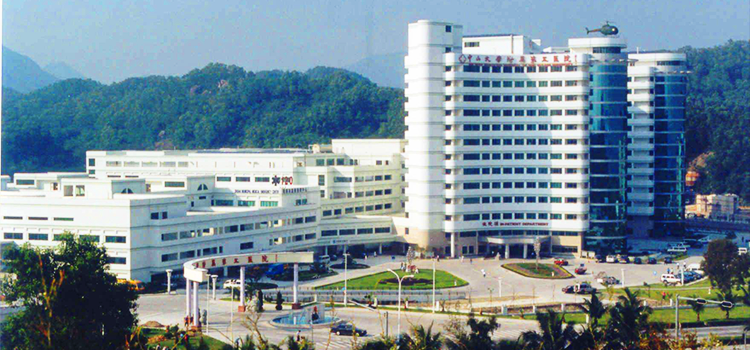

中山大学附属第五医院
广东省珠海市香洲区梅华东路52号
预约挂号：0756-2528955
- 医院介绍
-
中山大学附属第五医院位于珠海市美丽的香洲湾畔情侣路旁， 环山临海，环境幽静，风景秀丽。医院毗邻澳门，邻近码头及国际机场 ，海陆空交通十分便利。医院于2002年12月在原珠海市医疗中心的基础上建立 ，总占地面积22万平方米，建筑面积14万平方米。 建有欧陆建筑风格的门诊大楼、住院大楼、医技楼、肿瘤治疗中心。现有职工1400余人， 正高40名，副高108名，博士生导师6名，硕士生导师50名。多名教授在专业领域成就卓著。 目前有中华医学会各专科学会委员4人，省级医学会 空交通十分便利。医院于2002年12月在原珠海市医疗中心的基础上建立 ，总占地面积22万平方米，建筑面积14万平方米。 建有欧陆建筑风格的门诊大楼、住院大楼、医技楼、肿瘤治疗中心。现有职工1400余人， 正高40名，副高108名，博士生导师6名，硕士生导师50名。多名教授在专业领域成就卓著。 目前有中华医学会各专科学会委员4人，省级医学会